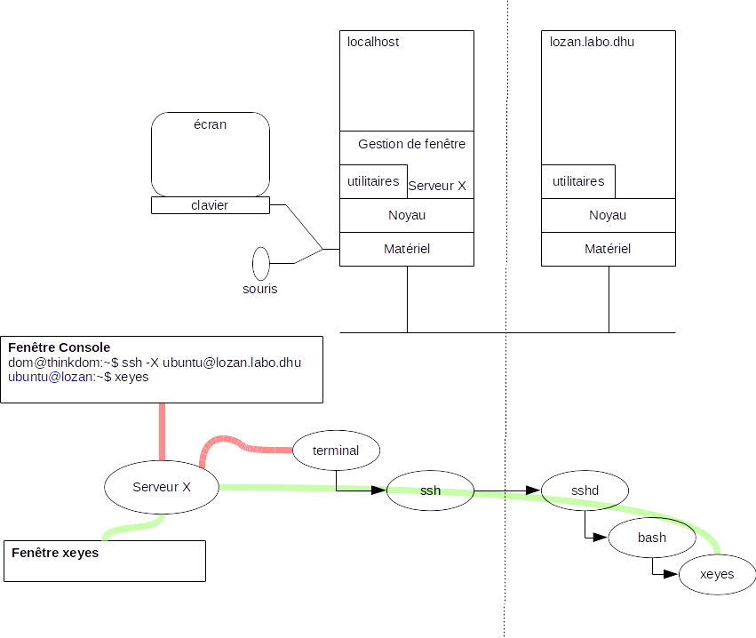

Utilisation d'une application graphique en réseau
dominique huguenin (dominique.huguenin@rpn.ch) -Principe d’utilisation avec ssh

Affichage graphique avec ssh
coté client ssh:
Démarrer une connexion ssh avec prise en charge de l’affichage sur le serveur X
ssh -X <nom de la machine hôte>
Avec l’option -X, tous les affichages utilisant un serveur X sont renvoyés vers le serveur X du client ssh.
exemple
-
sur la console local:
$ ssh -X ubuntu@lozan.labo.dhu$ ps xuf USER PID %CPU %MEM ... TIME COMMAND ... dom 2768 0.0 0.1 0:00 \_ gnome-session --session=gnome dom 2952 1.8 5.4 10:05 | \_ /usr/bin/gnome-shell dom 3332 0.0 0.3 0:11 | | \_ gnome-terminal dom 3342 0.0 0.0 0:00 | | | \_ bash dom 16039 0.0 0.0 0:00 | | | | \_ ssh -X ubuntu@lozan.labo.dhu ... -
sur la console ssh sur lozan.labo.dhu
ubuntu@lozan:~$ xeyes&ubuntu@lozan:~$ ps -axuf USER PID %CPU %MEM ... TIME COMMAND ... root 545 0.0 0.0 0:00 /usr/sbin/sshd -D root 31019 0.0 0.0 0:00 \_ sshd: ubuntu [priv] ubuntu 31030 0.0 0.0 0:00 \_ sshd: ubuntu@pts/1 ubuntu 31031 0.0 0.0 0:00 \_ -bash ubuntu 31390 0.6 0.0 0:00 \_ xeyes ...